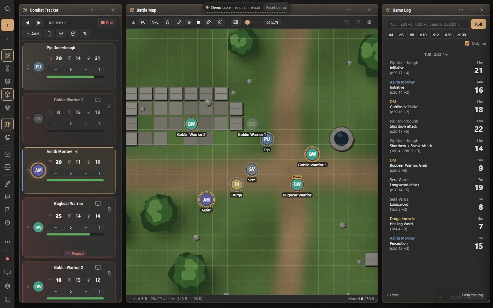
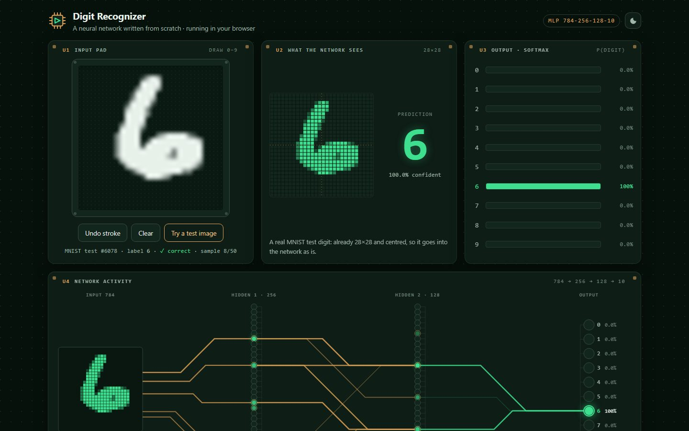

01 About
I'm a Data Migration Specialist at Boomerangfx. I map client and legacy data to the platform's data model, write SQL and Python to extract, clean, transform and load it, and validate every migration (reconciling record counts, spot-checking records, fixing mismatches) before handing it over.
I'm a Computer Engineering Technology graduate, and I'm happiest when a project crosses the line between hardware and software. Outside work I build projects in C, JavaScript and Python, each with tests. I'm looking for systems/backend, full-stack and ML/data roles.
- Projects with case studies
- 14
- Live demos you can run
- 7
- Languages
- 6
- Automated tests & checks
- 5,328
Data
Languages
Systems & web
Hardware & ML
02 Experience
Boomerangfx
Mar 2026 – Present-
Data Migration Specialist Now
Jun 2026 – Present- Migrate client and legacy data into Boomerangfx, mapping source fields to the platform's data model and transforming formats to fit.
- Write SQL queries and Python scripts to extract, clean, transform and load (ETL) client data, including CSV and Excel sources.
- Validate each migration: reconcile record counts, spot-check records, and track down and fix mismatches.
-
EMR Specialist
Apr – Jun 2026- Configured EMR charting and treatment templates and settings for client clinics.
- Imported patient records and charts into the EMR, and investigated and resolved EMR issues reported by clients.
-
Forms Specialist
Mar – Apr 2026- Built digital clinic forms (intake, consent, questionnaires) in the platform, converting clients' paper and PDF forms.
- Reviewed and tested forms with clients, made requested changes, and resolved form issues.
Education
Computer Engineering Technology
Humber College, Toronto
- Capstone: Smart Pet Monitor, a 4-sensor Raspberry Pi device with a custom PCB, Firebase and an Android app. I owned the I²C presence-detection sensor.
03 Projects
-

Tabletop Campaign WorkspaceLive demo
Rules, sheets, initiative, a map and dice spread across the game master's laptop and every player's phone Result: one real-time workspace with Firebase three-way-merge sync, a rules engine and an open-content data pipeline. 4,735 automated checks.
-

Pet Monitor LiveLive demo
My capstone's app only showed raw, latest-only readings Result: a validated ingest API with calibration to real units, visit detection, alerts, SQLite history and a live WebSocket dashboard. 52 tests.
-

Myousik 2.0: Full-Stack Music App
Our team's music site looked like an app but saved nothing Result: a REST API on SQLite with hashed-password sessions, song CRUD and reorderable playlists. 37 API tests, 1 runtime dependency.
-

tinyhttpd: HTTP Server in C
I wanted to learn what sits underneath every web server Result: a multithreaded HTTP/1.1 server in C: about 9,900 requests/s with 0 errors across about a million requests. 184 tests.
-

Neural Network from ScratchLive demo
ML libraries hide the maths Result: matrix ops, backpropagation and AdamW written by hand in plain JavaScript: 98.86% test accuracy in a 232 KB model. 43 tests, including gradient checks.
-

Mini-C Compiler → my MIPS CPULive demo
I wanted to see how high-level code becomes assembly Result: a lexer, parser, optimiser and MIPS code generator whose output runs on my own emulator. Optimised code executes 11.7% fewer instructions. 91 tests.
Earlier work
- Digital Logic Simulator· LiveEvent-driven simulator with gate delays, 0/1/X logic and reusable chips · 67 tests
- PID Control Lab· LiveTune PID controllers against five simulated systems, with relay autotuning
- MIPS Emulator· LiveTwo-pass assembler and step-through CPU with 50+ instructions · 61 tests
- Smart Pet Monitor (Capstone)Four-sensor Raspberry Pi device on a custom PCB; I built the presence sensor
- Parking Detection with YOLOv8Object detection on aerial lot photos · 89.4% mAP@50
- Multithreaded TCP Command ServerTelnet command server with a thread pool, run as a systemd service
- NBA Rookie Data Analysis35 draft classes analysed with SQL in Metabase
- Sorting AlgorithmsFour sorts timed in Java, plus a live visualizer
04 Contact
Let's build something together.
I'm currently looking for new roles and interesting projects. Whether you have a question or just want to say hi, my inbox is open.
Say hello© 2026 Aaron Morris Jara